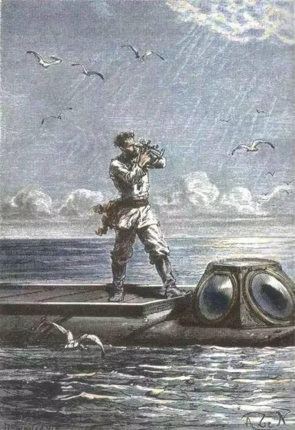

第20000号放映室欢迎您！

《海底两万里》的想象奇特，在其刚发行时就引起极大轰动，即便在科技如此发达的现在，大部分的核潜艇依然和十九世纪七十年代凡尔纳想象世界中的鹦鹉螺号有多处相似。在当时人门还在忙于完善天文学体系时，凡尔纳世界中人们已经把坐炮弹飞船到月球当作日常旅行。这位好像拥有预知能力的科幻作家，在这本探索至深之处的著作中，又会叙述出怎样扣人心弦，惊心动魄又引人深思的剧情呢？不妨进入20000号放映厅中，一睹为快。
返回